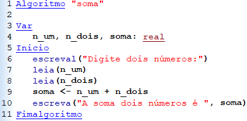

Pseudocódigo é uma forma genérica de escrever um algoritmo, utilizando uma linguagem simples (nativa a quem o escreve, de forma a ser entendida por qualquer pessoa) sem necessidade de conhecer qualquer sintaxe de qualquer linguagem de programação livre de contexto. Um exemplo de pseudocódigo é o Portugol que usa como base a língua portuguesa.
Muitas vezes o pseudocódigo é o caminho inicial para um programador antes mesmo dele ter algum conhecimento sobre linguagens como C#, C++, Java ou qualquer outra, e com ele podemos representar algoritmos de todos os os tipos. Em muitas escolas e faculdades do Brasil é usada a aplicação VISUALG como editor, interpretador e executor de programas escritos em portugol.
Exemplo de pseudocódigo que lê dois números e efetua a sua soma utilizando o VISUALG:
+351930608703